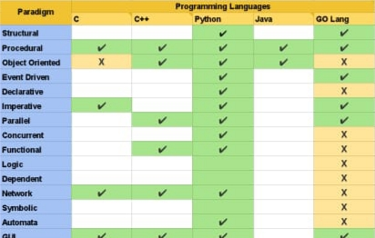

|
Aayushi Das
RA1811028010087
|
This Website helps you to learn the 15 different paradigms we have in our course Advanced Programming Practices
What is Paradigm?
Introduction of Programming Paradigms-
Paradigm can also be termed as method to solve some problem or do some task. Programming paradigm is an approach to solve problem using some programming language or also we can say it is a method to solve a problem using tools and techniques that are available to us following some approach. There are lots for programming language that are known but all of them need to follow some strategy when they are implemented and this methodology/strategy is paradigms. Apart from varieties of programming language there are lots of paradigms to fulfil each and every demand.
The 15 types of Paradigms:
- Structural: Programming with clean, goto-free, nested control structures.
- Procedural: Imperative programming with procedure calls.
- Object-Oriented: Programming by defining objects that send messages to each other. Objects have their own internal (encapsulated) state and public interfaces.
- Event-Driven: Programming with emitters and listeners of asynchronous actions.
- Declarative: Programming by specifying the result you want, not how to get it.
- Imperative: Programming with an explicit sequence of commands that update state.
- Parallel: It is a type of computation in which many calculations or the execution of processes are carried out simultaneously
- Concurrent: It is a form of computing in which several computations are executed concurrently—during overlapping time periods—instead of sequentially, with one completing before the next starts.
- Functional: Programming with function calls that avoid any global state.
- Logic: Programming by specifying a set of facts and rules. An engine infers the answers to questions.
- Dependent: It is an overlapping feature of type theory and type systems. In intuitionistic type theory, dependent types are used to encode logic's quantifiers like "for all" and "there exists".
- Network: It is a programming paradigm, derived from structured programming, [citation needed] based on the concept of the procedure call.
- Symbolic: It is a programming style heavily based on manipulating symbols, where a symbol is an entity that has the property that if two symbols have the same representation, they are the same symbol.
- Automata: It is a programming paradigm in which the program or part of it is thought of as a model of a finite-state machine (FSM) or any other (often more complicated) formal automaton (see automata theory).
- GUI: gee-you-eye[1][Note 1] or /ˈɡuːi/[2]) is a form of user interface that allows users to interact with electronic devices through graphical icons .
Comparison of Different Paradigms
15 Paradigms support on top 5 Programming Languages-

© 2020 Aayushi's website. All Rights Reserved.
Aayushi Das